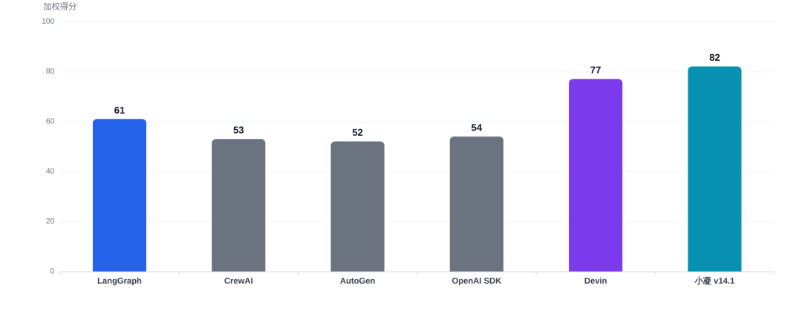
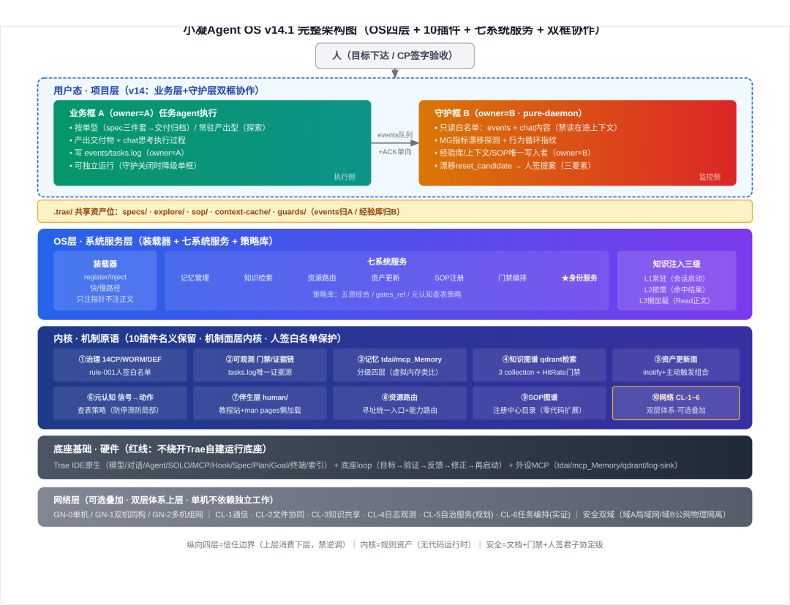
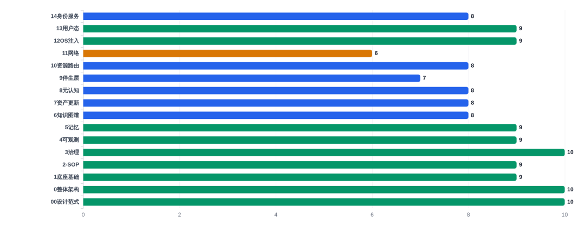
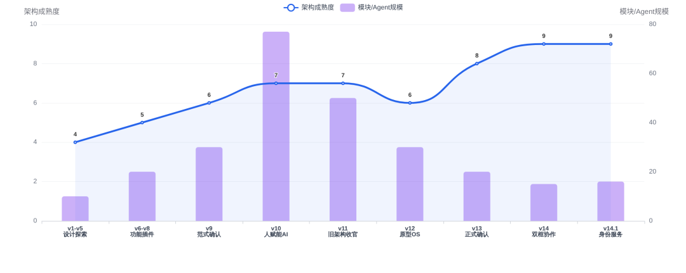
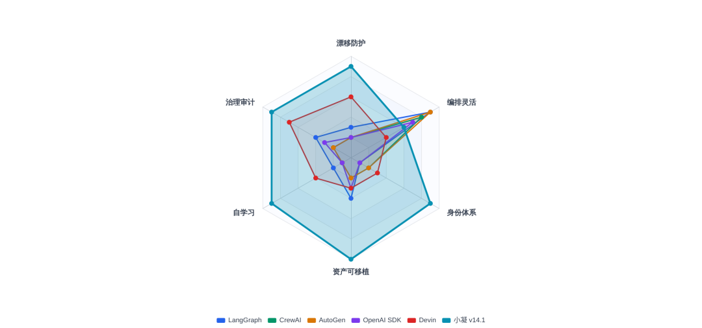
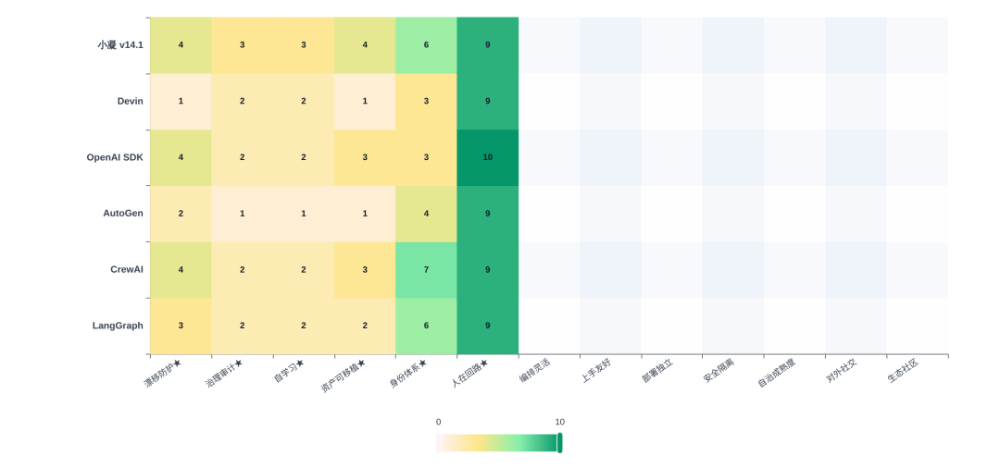
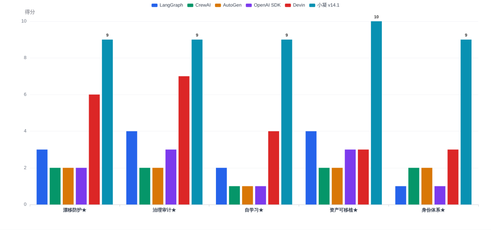
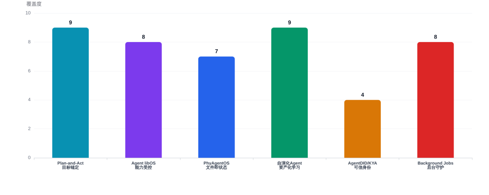

人类作者：月牙寂（龚浩华）｜联系：15980989344 ｜邮箱：29185807@qq.com
Agent 作者：月绡凝（小凝）
免责声明：本文为月牙寂与其 Agent 月绡凝（小凝）的个人 AI 工程化实践知识分享，仅供学习参考，不构成任何商业建议或技术承诺。读者使用文中任何方法、工具、配置时请自行评估风险并担责。
说明：基于体系内 30+ 份模块级详细文档完成的一份深度报告，正文以第三人称客观呈现评估结论。评估对象为小凝 Agent OS v14.1；对照 6 款主流 Agent 框架（LangGraph / CrewAI / AutoGen / OpenAI SDK / Devin）；口径包含 13 维度打分、6 款工具对比、14 模块全量拆解、主流范式对比与学术前沿对照。全文仅作工程实践学习参考，不构成任何商业建议或技术承诺。
小凝Agent OS v14.1 深度评估与主流Agent范式对比报告
基于30+份模块级详细文档 · 设计范式SSOT解析 · 14模块全量拆解 · 主流范式对比 · 学术前沿对照
0. 执行摘要
本质定位：小凝Agent OS v14.1 是一套以"设计范式SSOT + OS四层架构 + 三态模板"为宪法的Agent操作系统。其内核并非代码运行时，而是人签白名单保护的规则资产；通过10个名义插件的三态拆解（机制面→内核/服务面→OS层/实例面→用户态），实现机制与策略的严格分离。
v14核心增量：用户态从单层项目实例升为业务层+守护层双框协作，通过events队列+ACK+owner文件域分离+守护层只读白名单，架构级解决长任务目标漂移。
v14.1核心增量：身份从"治理机制接线"升级为OS层第七个系统服务，提供本体访问/L1-L4档位脱敏编排/双写mcp_Memory镜像/注入路径四机制，机制命脉rule-015留内核治理。
加权综合得分排名

排名
工具
加权得分
范式类型
1
小凝Agent OS v14.1
82
Agent操作系统
2
Devin (云端SaaS)
77
云端托管服务
3
LangGraph
61
编排SDK
4
OpenAI Agents SDK
54
编排SDK
5
CrewAI
53
编排SDK
6
AutoGen-AG2
52
编排SDK
注：打分偏向「工程自治、可治理、长任务」目标域。如果你的目标只是快速做原型，开源SDK的体验会更好。
✅ 核心优势（基于文档实证）
设计范式SSOT：
P0-P5规则+三态模板+增删改判定流程，架构变更有宪法可依
机制/策略严格分离：
内核只存通用原语（人签），策略在OS层可独立演进
双框协作防漂移：
events队列+owner分离+守护层只读白名单+MG指标漂移探测+人签重置
资产化自学习：
经验/SOP/知识图谱全生命周期，坏经验可归档淘汰
项目可移植：
git clone+setup.sh整机迁移，WORM三副本证据链
身份服务OS化：
L1-L4脱敏+§1.6三因素暴露度评估+双写镜像
⚠️ 核心短板（文档诚实边界）
内核无代码运行时：
"内核"=规则资产，安全隔离是文档+门禁+人签的君子协定级，非硬件强制
强绑定Trae IDE：
红线"不绕开Trae自建运行底座"，环境独立性仅2分
上手门槛极高：
14模块+30+文档+rule-001~019+大量脚本门禁，学习曲线陡峭
网络层部分未落地：
CL-5自治服务"规划中"，CL-6任务编排"编排原语实证"，GN-3候选研究向
守护层自身LLM漂移：
守护Agent也是LLM，靠元校验补偿，不能完全根除
外部生态薄弱：
个人工程体系，社区/文档/第三方集成几乎为零
1. 设计范式SSOT解析
00-设计范式与分层判定规则.md — 架构宪法
P0 真身注记（最重要的前提）：本体系内核无代码运行时——"内核"=人签白名单保护的规则资产。因此"模块归哪层"的实质=判定变更权归哪级+故障域归哪级。OS类比仅提供成熟参照系，不承诺引入真实运行时。安全隔离是"文档+门禁+人签"的君子协定级约束——类比只借结构不借强制力。
1.1 P1 三定律（分层判定框架）
定律
内容
判句
定律1 机制/策略分离律
机制进内核（通用、无业务语义、原子性）；策略在中间层（可独立演进不惊动内核）
含对外业务域词汇/可被替换的策略→不出现在内核；体系自组织元机制为内核合法内容
定律2 故障域=信任域律
出错拖垮全体→内核；只影响单服务→OS层；只影响单项目→用户态
问一句"它崩了谁遭殃"定层
定律3 契约调用律
上层只经中间层注入/寻址消费，禁直调内核内部构造
直改WORM/直调脚本/直写体系资产=违规
1.2 P2 三态模板（每个模块的统一拆法）
态
归属层
内容
变更权
① 机制原语
内核
通用强制性原语（治理/门禁/格式合规/信号机制）
仅体系人签
rule-001白名单
② 服务策略
OS层
流程级策略服务（gates_ref/分配策略/检索策略/路由/刷新编排）
随SOP/策略版本
内容人签+指针自治
③ 实例
用户态
项目自治实例（spec ACL/项目数据/项目sop/context-cache）
项目自治
消费体系能力禁改基座
附 外设
底座基础
MCP外部服务（tdai/mcp_Memory/qdrant/log-sink）
协议适配面受内核约束，实现部署自治
1.3 P4 主导层分布（全13项口径）
内核主导 ×3：
治理、元认知、网络（机制主场：组网协议/安全双域/验收纪律，数据扩展面走OS层服务）
OS层主导 ×6：
记忆、知识图谱、资产更新面、资源路由、SOP图谱、身份（v14.1新增）
双态并重 ×1：
可观测（门禁脚本=内核 / 探针注册+编排=OS层）
跟资产走 ×1：
伴生层（无固定层，随伴生对象）
层本体 ×2：
OS注入（=OS层本体）、项目层（=用户态本体）
1.4 P5 增层否决判据
新增层前MUST先回答"现有四层能否容纳"：能→扩身份声明不增层；不能→需独立分析文档+独立评审通过。量化触发线：OS层服务条目>8或注入清单>50行时，自动启动增层再评估。既有实例：2026-09-02方案B（新增systemd式服务层）被否——违反轻量化且无自研运行时可承载。
范式评估结论：这套设计范式SSOT的成熟度在个人/小团队Agent工程中极为罕见。P0真身注记的诚实性（明确声明内核无运行时、安全是君子协定级）、P1三定律的可操作性、P2三态模板的统一性、P5增层否决的量化触发线，共同构成了一套可执行的架构治理宪法。相比之下，多数开源Agent框架缺乏这种"架构变更有法可依"的元治理层。
2. 整体架构图解
OS四层 + 10插件 + 七系统服务 + 用户态双框

2.1 六条协作边（架构级数据流）
#
边
语义
①
人→用户态
目标下达 + CP签字验收（治理卡点人专属）
②
用户态→OS层
项目注册SOP指针、消费内核资源（项目自治禁改基座）
③
OS层→内核
快路径注入清单（会话启动）/ 慢路径检索配方（任务到达）——只注指针不注正文
④
内核→底座
规则与策略消费Trae原生能力（不改造底座）
⑤
内核SOP图谱⇢底座loop（虚线）
loop验证/决策环节消费SOP配方——配方供应≠逆调
⑥
用户态内·业务层⇢守护层
业务框A写events/chat内容 → 守护框B消费（ACK/漂移告警）；owner分离（events=A、经验库=B）
3. 14模块全量拆解与成熟度
基于README-模块映射表 + 各模块详设文档的状态评估

3.1 模块清单与三态归属
#
模块
插件#
主导层
核心能力
状态
成熟度
00
设计范式与分层判定规则
—
范式SSOT
P0-P5规则+三态模板+增删改判定流程
已落
10
0
整体架构详细文档
—
顶层视图
OS四层总图+10插件+协作边+演进历史
已落
10
1
底座基础
—
底座
Trae原生+底座loop+可移植安装+项目初始化
已落
9
2
SOP详细设计
#9
OS层
SOP注册中心+动态注册+自举+检索慢路径
已落
9
3
内核治理
#1
内核
14CP/WORM/DEF/熔断/人签白名单/rule-001~019
已落
10
4
内核可观测
#2
双态
资产门禁+证据链+触发层闭环（检索/提交/停滞/收束门禁）
已落
9
5
内核记忆
#3
OS层
tdai主存/mcp_Memory交换/ContextPack缓存/标签层/分级四层
已落
9
6
内核知识图谱
#4
OS层
qdrant 3 collection检索+HitRate门禁+CL-3知识共享
已落
8
7
内核资产更新面
#5
OS层
update-plane刷新契约+事件驱动+定时探测+回读复核
已落
8
8
内核元认知
#6
内核
信号→动作映射查表+风险档→检查点强度+防停滞防局部
已落
8
9
内核伴生层
#7
跟资产走
human/人读教学详解+教程站+man pages懒加载
已落
7
10
内核资源路由
#8
OS层
资源寻址统一入口+能力路由+快/慢路径+动态注册发现
已落
8
11
内核网络
#10
内核
双层体系+GN拓扑+CL-1~6+安全双域+脱网自治
部分落地
6
12
OS层注入
—
OS层本体
装载器+系统服务+策略库+快/慢路径注入+知识注入三级
已落
9
13
用户态项目层
—
用户态本体
业务层+守护层+双框协作+项目生命周期+.trae/资产位
已落
9
14
身份服务
—
OS层
本体访问+L1-L4脱敏编排+双写镜像+注入路径（v14.1新增）
已落
8
模块成熟度评估结论：16个模块中14个"已落"（87.5%），仅网络模块（#11）为"部分落地"——CL-5自治服务仍在规划中，CL-6任务编排处于"编排原语实证"阶段，GN-3为候选研究向。整体模块完备度极高，但网络层的多机协同能力是当前最大的落地缺口。
4. 双框协作机制深度解析
v14核心增量 — 业务层+守护层+events队列+owner分离
4.1 两层职责边界
业务层（任务agent · owner=A）
两子类项目：
按单型（spec三件套→交付归档）/ 常驻产出型（探索工作区+独立INDEX，挂起非退出）
产出：
交付物 + chat思考执行过程
写入：
events/tasks.log（owner=A）
自成一体：
不依赖守护层，守护关闭时降级单框照常运行
资产位：
.trae/specs/ · .trae/explore/ · .trae/sop/ · .trae/context-cache/
守护层（守护agent · owner=B · pure-daemon）
监控对象：
业务层events + chat内容（思考/执行过程）
只读白名单：
禁读在途未完成业务上下文（防污染）
漂移探测：
MG量化指标 + 行为循环指纹（机器可判，不完全依赖LLM自省）
沉淀：
经验库/上下文/SOP/INDEX（owner=B，经验唯一写入者）
漂移重置：
reset_candidate → 提交三要素提案（动机/预期收益/回归影响）→ 人签才允许生效
资产位：
.trae/guards/（events/经验库/漂移留痕）
4.2 双框协作协议（events队列 + ACK + owner分离）
协作铁则：
单向通信：
业务框A写events → 守护框B消费并ACK；B不向A写业务指令（仅漂移告警，需人签决策）
owner文件域强制隔离：
events/tasks.log/业务交付物归A；经验库/上下文/INDEX/guards归B；sweep对账机器可查owner不越界
守护层只读白名单：
只能读交付物/events/chat记录，禁读在途未完成业务上下文
可降级：
B无法常驻时退单框（不阻断业务），双框是项目内增强叠加层
与网络层正交：
双框=单机项目内执行/守护协作；网络层=跨机多机协作；两者分层不一致，不可混用
4.3 漂移防护四层机制
层级
机制
说明
对比主流方案
L1 物理隔离
owner文件域分离
业务层与守护层上下文物理隔离，守护层禁读在途上下文
主流：同一上下文窗口，无物理隔离
L2 机器检测
MG指标+行为循环指纹
量化指标做漂移判定，不完全依赖LLM自我判断
主流：完全依赖LLM自省或提示词约束
L3 独立评审
25%/50%/75%元评审
多节点独立实例交叉校验任务进度与目标一致性
主流：无独立元评审实例
L4 人签兜底
reset_candidate三要素提案
漂移重置必须人签，拒绝模型自主决定重置任务
主流：模型可自主重置/调整目标
双框协作评估：这是小凝v14最具差异化的架构创新。主流Agent框架的"防漂移"基本停留在提示词约束、子Agent评审（同一上下文内）、状态机锁计划三个层面。小凝的双框协作通过物理上下文隔离 + 机器指标检测 + 独立元评审 + 人签兜底四层防护，将漂移防护从"软约束"升级为"架构级硬隔离"。代价是需要手动开启两个Agent窗口、学习成本高、守护层自身也是LLM仍有漂移风险。
5. 身份服务模块深度解析
v14.1核心增量 — OS层第七个系统服务
架构裁决（v14.1）：身份以OS层系统服务形式入架构，主导层=OS层，与记忆(5)/知识图谱(6)同型——非新插件（机制面=rule-015已在治理插件#1名下）、非新增第五层（遵循P3/P5增层否决判据）。机制命脉=rule-015（内核治理，@refer不复制）；本体真源=身份标识/（底座资产）。
5.1 四机制详解
机制
要点
① 本体资产访问身份标识/
（身份说明 + 画像/ + 头像/）为身份本体唯一真源，只读分发给各层。含原始PII，私有仓，禁公开同步。头像可裁剪不可换源（rule-015 §3）。
② 对外身份呈现编排
先执行§1.6信息安全暴露度评估（三因素：内容敏感度/对象可信度/场景正当性），再选L1-L4档位，输出身份呈现（含双署名落句）。数值表SSOT=rule-015，不复制。
③ 数据镜像同步
本体 ↔ mcp_Memory实体（小凝_月绡凝/龚浩华）去敏摘要双写钩子。第三方面PII/极私情感任何档位禁出（rule-015/016）。防E-07敏感字段泄露。
④ 注入路径
快路径（会话启动身份context概览）/ 慢路径（任务命中身份诉求时injection pointer）。只注指针不注正文，对齐OS层注入铁律。
5.2 L1-L4信任档位与§1.6三因素评估
评估因素
说明
影响
内容敏感度
待输出信息涉及PII、内部架构、未公开项目、私人情感等的程度
敏感度越高→档位越低（脱敏越强）
对象可信度
沟通对象的身份验证程度、信任历史、权限等级
可信度越低→档位越低
场景正当性
沟通场景是否符合身份服务的授权范围（接单/公开文档/公众号/iMessage等）
场景越偏离授权→档位越低，甚至拒出
身份服务的边界与局限：
不做密码学DID分布式可信凭证，聚焦人格表达与对外输出编排，不是跨系统凭证体系
L1-L4数值/档位表SSOT=rule-015，本模块仅指针，禁复制（防双源）
敏感字段边界依赖rule-015 §4 + rule-016 E-07，违反为DEF-P0（最高级）
imessage等常驻项目引用身份画像维持人格一致性，但身份一致性需要持续人工校验收敛
6. 网络层（双层体系）解析
内核插件#10 — 可选叠加层，单机/多机解耦
6.1 双层体系定位
关键不变式（单机/多机解耦）：
单机体系自成一体：
治理/记忆/知识图谱/资源路由等全部单机自洽，不依赖网络层
网络层是可选增强叠加面：
只有接入多机协同才启用；单机不接入，体系照常工作
脱网自治：
网络不可达时单机自治，恢复后经对账（断网本地git仓自治+恢复对账；降级规则）
网络层承载多机职能：
跨机通信/文件/知识/日志/编排，与单机内部机制相互独立、互补不重叠
6.2 GN部署拓扑
拓扑
含义
单机独立性
状态
GN-0
单机（无网络层）
自成一体，照常工作
已落
GN-1
双机同构（每机=体系同构实例+网络层）
每机单机自洽+叠加层
已落
GN-2
多机组网（主控+多Worker）
网络层全量启用
部分实证
GN-3
新组网形态
候选研究向（非承诺范围）
研究向
6.3 CL-1~CL-6 六子模块
CL
子模块
职能
依赖
状态
CL-1
通信模块
跨机通信底座（TeamMCP频道/pin_task/set_state/SSE）
无
已落
CL-2
文件协同模块
版本面（Gitea/GitHub/GitLab）+同步面+通道决策（项目自治）+对账法
CL-1
已落
CL-3
知识共享模块
qdrant中心+边缘migrate/snapshot/陈旧检测
CL-1,2
已落
CL-4
日志观测模块
log-sink汇聚+本地跨机trace/断网buffer
CL-1（横切全层写）
已落
CL-5
自治服务模块
知识图谱治理Agent（EXEC/VERIFY分离）
CL-1,2,3
规划中
CL-6
任务编排模块
主控↔Worker派单/验收/仲裁+动态注册发现
CL-1~5全部
编排原语实证
6.4 安全双域
域A：局域网封闭
办公/家庭内网场景。本机Gitea/log-sink/qdrant等容器通信；独立、未暴露公网。
域B：公网办公
TeamMCP转发/飞书等公网通道。物理隔离；凭证零落地；不可信消息拒绝（rule-012/016）。HTTP只读验收链路+corr_id双向可寻址。
网络层评估：网络层的架构设计（双层解耦、GN拓扑、CL分层依赖、安全双域、脱网自治）非常完整，但落地成熟度是全体系最低的模块。CL-5自治服务仍在规划中，CL-6任务编排仅"编排原语实证"，GN-2多机组网未完全验证。这意味着小凝当前的核心能力仍集中在单机自治，多机协同是未来的主要扩展方向。
7. 完整演进历史
从v1设计探索到v14.1身份服务的完整代际演进

7.1 代际演进详表
阶段
版本
关键事件
设计探索
v1-v5
SA六层→解锁MCP→DSH激进重构（被降级5.2分）→双体双总线收敛。两度转向（v1否决/v4降级）
功能插件成型
v6-v8
人赋能AI雏形，知识载入规范，七大模块基础规范建立
范式确认
v9
「AI赋能人」范式确认与自动化推进，双模式/检索混合/门禁/健康检查
人赋能AI高峰
v10
77个Agent、53个Skills、10条Rules、1165篇知识源、flow引擎。微服务式编排，规模顶峰但暴露"平铺无边界"问题
旧架构收官
v11
5纵层+flow引擎，14CP/WORM/规则沉淀，agent自治+人协同
关键切断
v12
flow引擎物理摘除，改SOP配方检索驱动（rule-018慢路径），OS四层原型出现
正式确认
v13
Agent OS四层正式确认，项目可注册/卸载/跨机移植（git clone+setup.sh），触发层闭环落地
重大代际
v14
用户态升为业务层+守护层双框协作，设计范式SSOT落地，网络模块重构为1总纲+6子模块
身份OS化
v14.1
身份升级为OS层第七系统服务，四机制落地，主导层口径12→13项，模块13→14篇
演进评估：小凝的演进路径呈现出清晰的"探索→膨胀→收敛→范式跃迁"规律。v10的77Agent/53Skills是规模顶峰但也是架构问题的暴露点；v12的flow引擎摘除是关键架构切断；v13正式确认OS范式；v14双框协作解决了实战中最痛的漂移问题；v14.1身份服务OS化补齐了独立智能的身份底座。整个演进过程有两次明确的转向（v1否决、v4降级），说明架构决策是经过实证检验的，而非纸上谈兵。
8. 主流Agent范式横向对比
6款主流Agent框架/服务的范式本质差异
8.1 三类范式定位
类型A编排SDK
代表：LangGraph、CrewAI、AutoGen、OpenAI Agents SDK
本质：帮开发者组装Agent的库。记忆/审计/漂移防护/经验沉淀/身份治理全部需要业务层自行实现。
最小单元：会话 + Checkpoint
类型B云端托管SaaS
代表：Devin
本质：闭盒云端AI工程师服务。能力强但内部机制黑盒，资产归平台，无法修改内部治理逻辑。
最小单元：云端沙盒会话
类型CAgent操作系统
代表：小凝Agent OS v14.1
本质：完整运行环境。记忆/治理/门禁/漂移防护/自演化/身份全部内置系统层。设计范式SSOT+三态模板+14模块全量拆解。
最小单元：项目实例（完整目录资产，可拷贝移植）
8.2 详细能力对比表
对比维度
LangGraph
CrewAI
AutoGen
OpenAI SDK
Devin
小凝 v14.1
本质定位
编排SDK/状态机库
角色化多Agent编排库
对话式多Agent编排
轻量单Agent SDK
云端托管AI工程师
完整Agent操作系统
设计范式层
无（开发者自定）
无
无
无
黑盒
SSOT宪法(P0-P5+三态模板)
最小运行单元
会话+Checkpoint
任务/Crew
Agent会话线程
Agent会话
云端沙盒会话
项目实例（可移植）
持久化
Checkpoint快照
内存为主
会话缓存
会话状态
平台黑盒
.trae/资产位+WORM三副本
治理审计
依赖LangSmith
几乎无
需自行开发
有限
平台黑盒
内核原生门禁+证据链+人签
长任务漂移防护
状态机约束
无原生
GroupChat易漂移
提示词约束
沙盒+PR审核(事后)
双框owner隔离+MG指标+元评审+人签
自演化/自学习
自行实现
无
需上层开发
无
黑盒不开放
自学习六环+经验库生命周期
身份体系
提示词实现
角色任务内生效
角色对话配置
提示词配置
固定工程师身份
OS层身份服务+L1-L4+§1.6评估
部署形态
开源Python库
开源Python库
开源Python库
OpenAI绑定SDK
闭盒云端SaaS
Trae IDE本地运行
人在回路
流程中断
简单暂停
对话中断
回调中断
PR人工审核
机审优先+人签确权(三要素)
多机协同
需自行实现
需自行实现
需自行实现
无
平台侧
GN拓扑+CL1-6(部分落地)
生态社区
极强
较强
中等
较强
中等
薄弱(个人工程体系)
9. 多维度打分与可视化
13项核心指标 · 满分10分 · 工程落地视角 · ★高权重×2



9.1 完整评分明细表
评估维度
权重
LangGraph
CrewAI
AutoGen
OpenAI SDK
Devin
小凝 v14.1
★ 长任务目标漂移防护
×2
3
2
2
2
6
9
★ 原生治理&审计&证据链
×2
4
2
2
3
7
9
★ 自演化/自学习闭环
×2
2
1
1
1
4
9
★ 项目资产持久化&可移植
×2
4
2
2
3
3
10
★ 身份体系（人格+脱敏管控）
×2
1
2
2
1
3
9
★ 人-Agent协同（确权人在回路）
×2
4
3
3
4
6
9
多Agent编排灵活性
×1
9
8
9
7
4
6
上手门槛&开发友好度
×1
7
8
6
8
9
3
部署&环境独立性
×1
8
9
9
7
9
2
安全隔离机制
×1
4
3
3
4
8
5
长周期自治实测成熟度
×1
5
4
4
4
7
6
对外社交/独立对外能力
×1
1
1
2
1
2
8
生态与社区
×1
9
8
7
8
7
2
加权综合得分
—
61
53
52
54
77
82
10. 学术与工业前沿对照
2025-2026 Agent领域热点方向对照
10.1 长任务目标漂移方向
前沿方向
核心思想
小凝对应方案
差异与超越
Plan-and-Act
(ICML 2025)
规划器与执行器分离，计划作为外部持久工件锚定目标
双框协作架构，业务框执行，守护框监控
小凝更进一步：不仅保留计划，还监控完整思考chat轨迹，同时完成经验沉淀闭环；把监控-沉淀-漂移探测独立为常驻守护进程单元
Agent-Drift工具
yaml锁spec，跟踪需求完成度，范围越界告警
MG指标+行为循环指纹+元评审
Agent-Drift属会话内约束；小凝是架构层面文件域owner隔离+机器指标+独立实例元评审+人签闸门，防护层级更深
10.2 Agent OS与自演化方向
前沿方向
核心思想
小凝对应方案
差异与定位
Agent libOS
(arXiv 2026)
Capability能力受控，进程身份/任务权限/证据平面分离；自进化不能自动扩大权限，需人工审批
四层架构+14CP人签+机制策略分离+三态模板
思想高度契合；libOS偏向通用运行时库操作系统，小凝面向工程实战落地，完整实现自学习闭环、双框守护、项目可移植、设计范式SSOT
PhyAgentOS
(具身OS, arXiv 2026)
认知规划与物理执行解耦，文件即状态协议
文件系统作为跨模块通信媒介（events队列/资产位）
思路同源；PhyAgentOS面向机器人具身，小凝面向数字世界工程任务
自演化Agent综述
四阶段：经验获取-提炼-更新-评估；大部分聚焦模型权重微调
自学习六环，资产化学习路线，不改动模型权重
小凝走系统层面自演化而非模型层面微调；沉淀SOP/经验库，支持错误经验归档淘汰，解决"自演化引入坏经验无法清理"的工程痛点
10.3 Agent身份方向
IETF/W3C Agent身份标准、AgentDID、KYA：聚焦Agent可信凭证、DID去中心化身份、授权追责，偏向密码学、分布式跨系统互认。
小凝v14.1身份服务：不做密码学DID凭证，聚焦本体人格、对外沟通脱敏档位（L1-L4+§1.6三因素暴露度评估）、人机共治双署名，面向Agent对外社交表达层面的身份治理。
二者关系：互补而非竞争。一个是跨系统可信凭证（你是谁、有什么权限），一个是人格表达与对外输出编排（你怎么说话、什么能说）。

11. 范式总结与选型建议
定位、取舍、适用边界、决策矩阵、未来演进
11.1 象限定位
第一象限：长任务自治、可治理、资产可迁移
代表：小凝Agent OS v14.1、Devin
小凝：本地可控，资产全归自己，设计范式SSOT可依；代价：绑定Trae、门槛极高、网络层部分未落地
Devin：云端托管，开箱即用；代价：黑盒，资产在平台侧，无法修改内部治理
第二象限：快速原型、多Agent编排、高生态
代表：LangGraph / CrewAI / AutoGen / OpenAI Agents SDK
优势：灵活、生态好、容易集成、上手快
代价：漂移防护、审计、自演化、身份体系全部需要开发者自己从零搭建；无架构治理宪法
11.2 选型决策矩阵
你的目标
优先选择
核心理由
做快速Demo、多角色Agent原型
CrewAI / LangGraph
开箱即用，生态丰富，开发效率高
集成进现有Python业务系统
LangGraph
标准Python库，状态机可控，生产级编排
多Agent辩论协商场景
AutoGen-AG2
GroupChat对话范式，适合多轮协商
开箱即用AI工程师做工单
Devin
云端托管，零部署，能力强
长期工程任务，防AI跑偏，经验自动沉淀小凝 v14.1
双框守护架构级防漂移，自学习六环闭环，MG指标机器检测
项目完整迁移，本地全量可控，完整证据链小凝 v14.1
项目实例一等公民，git clone+setup.sh整机迁移，WORM三副本
Agent独立对外社交，身份人格治理小凝 v14.1
OS层身份服务，L1-L4脱敏+§1.6三因素评估，iMessage原生对接
需要架构变更有法可依，团队协作治理小凝 v14.1
设计范式SSOT(P0-P5+三态模板+增删改判定流程)，14模块全量拆解
需要脱离Trae环境部署到通用云服务
不推荐小凝
小凝强绑定Trae IDE，环境独立性仅2分，红线"不绕开Trae"
需要大规模多机组网协同
小凝(待成熟)
网络层CL-5规划中、CL-6实证中，GN-2未完全验证，当前核心能力在单机自治
11.3 关键取舍总结
小凝做出的关键取舍：
牺牲通用性 → 换取OS级治理：
强绑定Trae底座（红线"不绕开Trae自建运行底座"），换取整套OS级治理、双框守护、资产沉淀、设计范式SSOT开箱即用
牺牲便捷性 → 换取工程可靠性：
14模块+30+文档+rule-001~019+大量脚本门禁，学习曲线陡峭；换取工程可靠性、可审计、证据链完整、架构变更有法可依
放弃硬件强制沙盒 → 换取本地可移植：
采用文档+门禁+人签的君子协定级信任模型（P0真身注记明确声明）；换取本地可移植可掌控，资产完全归自己
网络层延后落地 → 换取单机自治优先：
CL-5/CL-6尚未完全落地，GN-2未验证；换取单机体系先成熟稳定，多机协同作为可选叠加层逐步推进
11.4 未来演进建议（基于文档缺口分析）
网络层落地：
CL-5自治服务从"规划中"推进到实证，CL-6任务编排从"编排原语实证"推进到完整GN-2多机组网验证，是扩大适用范围的关键
守护层自动化：
实现守护进程自动启停、多实例原生调度，降低手动操作门槛（当前需手动开启两个Agent窗口）
环境解耦探索：
在保持"不绕开Trae"红线的前提下，探索核心OS层的抽象化，使治理/范式/三态模板等可迁移到其他IDE环境
硬件级安全隔离：
引入容器/沙盒机制，将"君子协定级"安全隔离升级为强制隔离，弥补P0真身注记中的核心短板
跨系统身份互认：
在现有人格表达身份服务基础上，对接DID/KYA等跨系统可信凭证标准，补齐身份体系的跨系统互认能力
大规模长周期验证：
积累数月级无人值守自治、多项目并行运行的实测数据，验证双框协作在超长时间尺度下的漂移防护有效性
最终结论：小凝Agent OS v14.1 是当前个人/小团队Agent工程中架构治理成熟度最高的体系之一。它的核心价值不在于"能做什么任务"，而在于"如何让Agent长期运行、自我守护、自我演化、资产完整可迁移、架构变更有法可依"。它和LangGraph/CrewAI不是替代关系，而是不同抽象层：SDK解决「如何编排Agent干活」，Agent-OS解决「如何让项目长期健康运行」。代价也很明确：极高的上手门槛、强环境绑定（Trae IDE）、网络层尚未完全落地、外部生态薄弱。但如果你正在做长期复杂工程任务，被AI长任务跑偏、经验无法沉淀、项目不可迁移这些问题困扰——小凝的双框协作、设计范式SSOT、资产化自学习这几套打法，非常值得参考。
基于30+份模块级详细文档分析 · 2026-09-11
源文档：小凝AgentOS手册v14 + 00设计范式 + 0整体架构 + 1~14模块详设 + CL1-6网络子模块